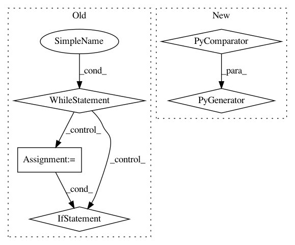

f0d581c071f14682c46f7917e11592c189382f53,server/bert_serving/server/__init__.py,BertServer,_run,#BertServer#Any#Any#Any#Any#,82
Before Change
seqs = jsonapi.loads(msg)
// partition the large batch into small batches
s_idx = 0
while s_idx < int(msg_len):
tmp = seqs[s_idx: (s_idx + self.max_batch_size)]
if tmp:
partial_job_id = job_id + b"@%d" % s_idx
backend.send_multipart([partial_job_id, jsonapi.dumps(tmp)])
s_idx += len(tmp)
else:
backend.send_multipart([job_id, msg])
except ValueError:
self.logger.error("received a wrongly-formatted request (expected 4 frames, got %d)" % len(request))
After Change
job_id = client + b"//" + req_id
if int(msg_len) > self.max_batch_size:
seqs = jsonapi.loads(msg)
job_gen = ((job_id + b"@%d" % i, seqs[i:(i + self.max_batch_size)]) for i in
range(0, int(msg_len), self.max_batch_size))
for partial_job_id, job in job_gen:
backend.send_multipart([partial_job_id, jsonapi.dumps(job)])
else:
backend.send_multipart([job_id, msg])
In pattern: SUPERPATTERN
Frequency: 3
Non-data size: 5
Instances
Project Name: hanxiao/bert-as-service
Commit Name: f0d581c071f14682c46f7917e11592c189382f53
Time: 2018-12-17
Author: hanhxiao@tencent.com
File Name: server/bert_serving/server/__init__.py
Class Name: BertServer
Method Name: _run
Project Name: google/deepvariant
Commit Name: 13a85e08e713f374933bc4fc082f67e1fa8dcd02
Time: 2018-02-20
Author: cym@google.com
File Name: deepvariant/util/io_utils.py
Class Name:
Method Name: read_shard_sorted_tfrecords
Project Name: OpenNMT/OpenNMT-py
Commit Name: 128ea5274db96163c58a99405e7205abcab36192
Time: 2017-08-28
Author: srush@seas.harvard.edu
File Name: onmt/Translator.py
Class Name: Translator
Method Name: translateBatch